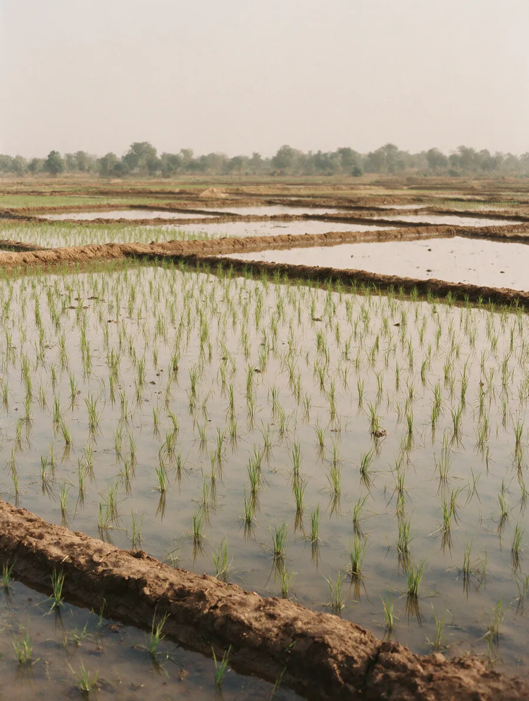
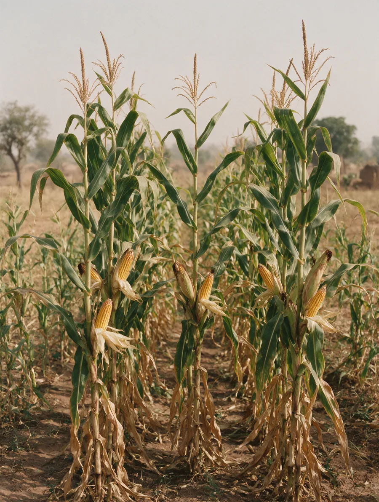
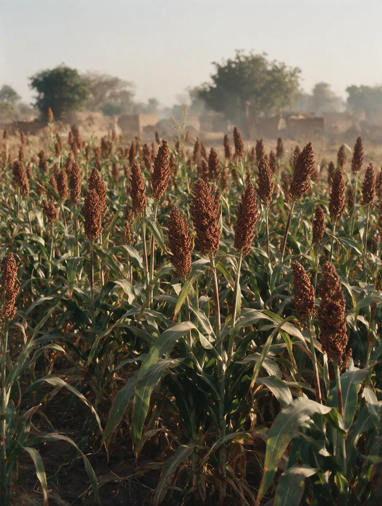
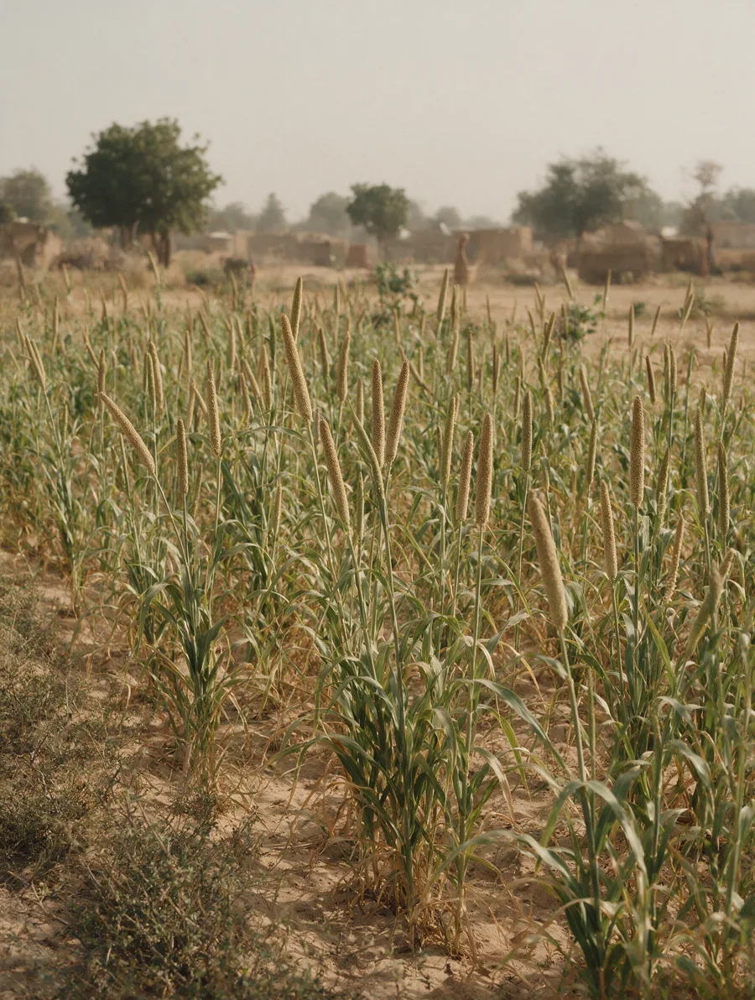
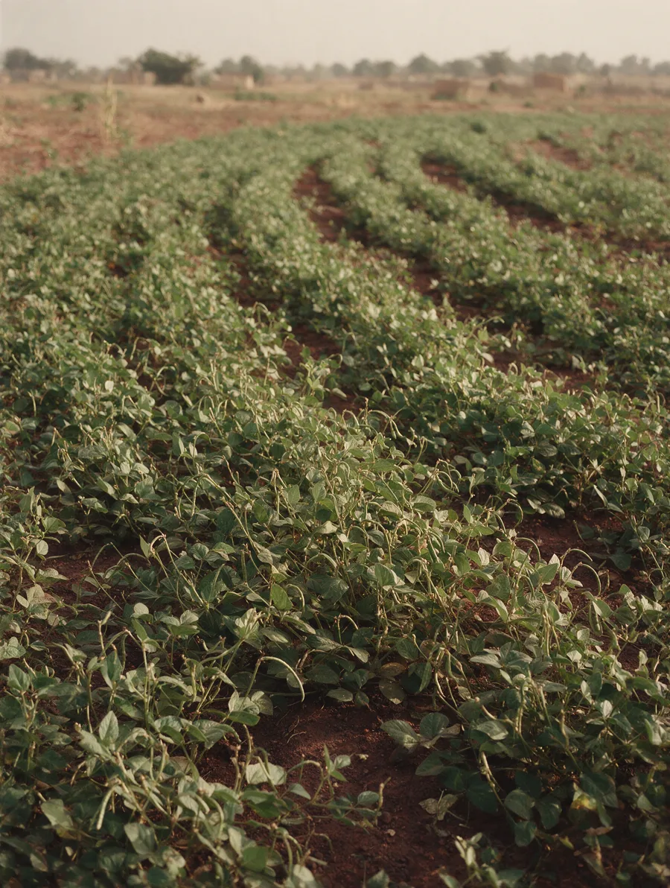
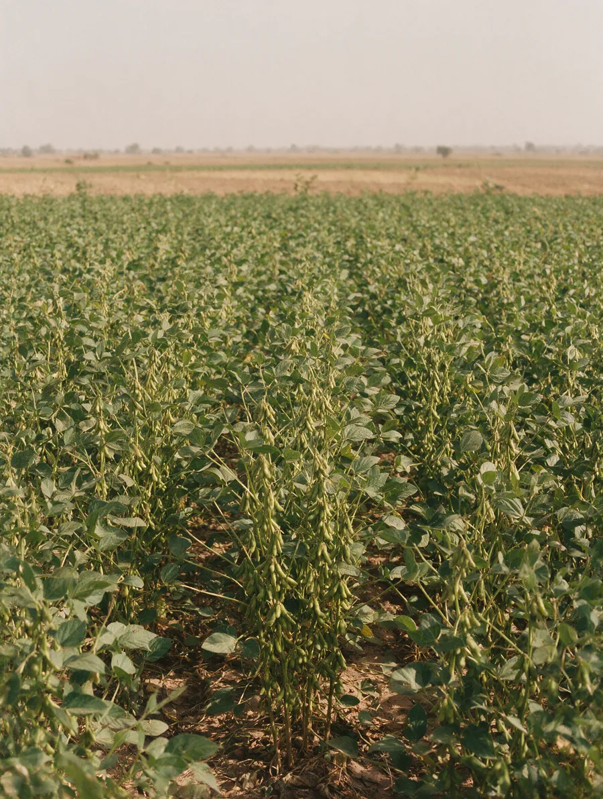
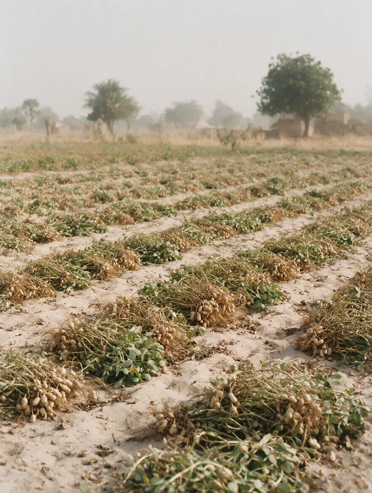
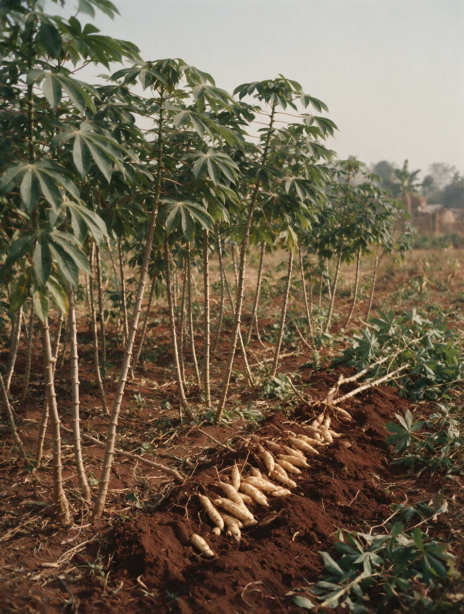
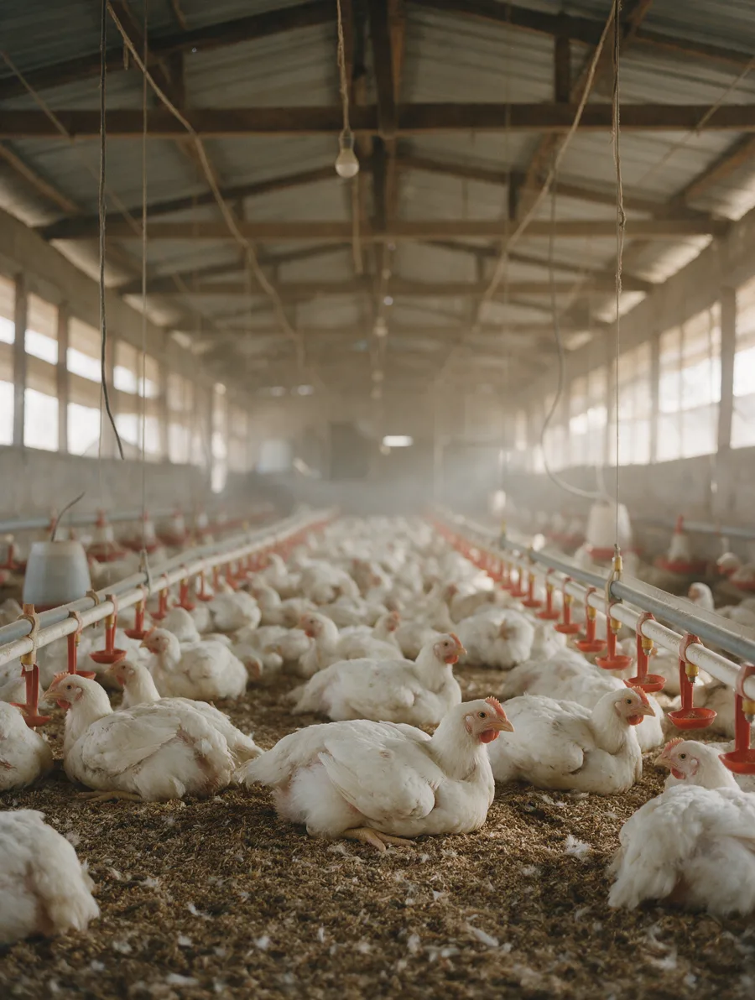
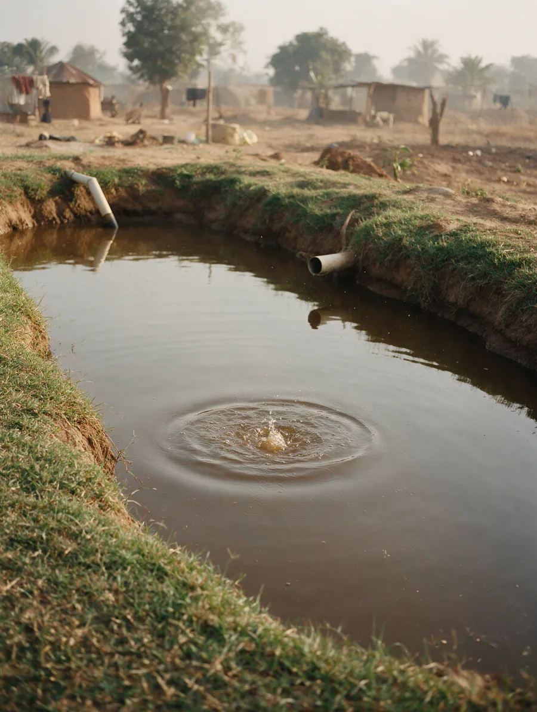

- Category
- Form
- Paddy, locally milled
- Supplied as
- Graded bulk bags
- Use
- Food










Pricing, available tonnage and harvest windows are shared with bulk buyers on request.
Rotation runs nitrogen-fixing legumes against grain to hold soil condition, and the soil is sampled each season.
Tell the produce desk the line, the volume and the delivery window. Pricing and available tonnage come back against your dates, not against a general enquiry.